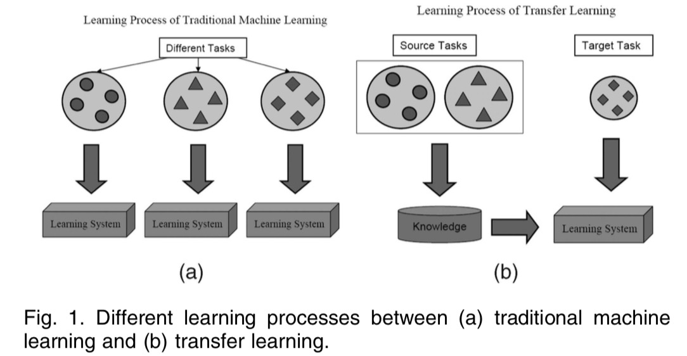
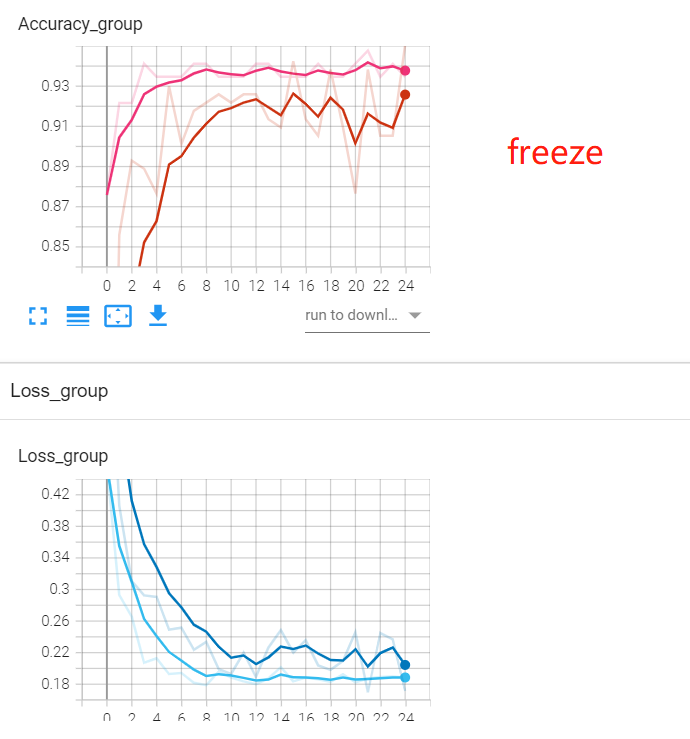

7.2 Finetune 模型微调
Finetune（微调）是深度学习模型训练中常用的方法。Finetune的理论可从迁移学习（Transfer Learning）中学习。
迁移学习
Transfer Learning是机器学习的分支，主要研究源域(source domain)所学到的知识，如何迁移到目标域(target domain)中
如《A Survey on Transfer Learning》中的图所示：

为什么要这样做呢？这是因为在target domain中，数据量较少，可学习提取的知识不足以完成任务，所以需要进行迁移学习，这样在target domain中可以学得快，学得好。
例如一个人学会了骑自行车，再去学骑电动车就很快，又比如一个人学会了C语言，再去学python就会比较快。
transfer learning是一个较大的领域，这里只讨论神经网络的finetune，如何理解模型的finetune它也是迁移学习呢？
我们知道，神经网络中最重要的东西就是权值参数，训练模型就是在更新参数，这些参数就是模型学习到知识。
之前对alexnet的卷积核进行了可视化，可以理解卷积核学习到的图像边缘，色彩信息就是alexnet所学习到的知识。
在图像任务中，这些知识是可以共享，可以迁移到其它任务中去，因此，大家常常采用在imagenet上训练好的模型进行finetune，进行transfer learning。
Finetune常用的两种方法
通常，会将模型划分为两个部分
feature extractor: 将fc层之前的部分认为是一个feature extractor
classifier: fc层认为是classifier
基于此，finetune大体有两种方法：
将 feature extractor部分的参数固定，冻结，不进行训练，仅训练classifier
将 feature extractor设置较小的学习率，classifier设置较大的学习率
下面通过一个实例讲解两种方法
方法一：冻结 feature extractor。
原理是通过设置paramters的requires_grad为False，让它们不进行权重更新即可。
for param in resnet18_ft.parameters():
param.requires_grad = False
在完整代码中，每个epoch都打印了第一个卷积层权重，观察它们是否有变化。
经过25个epoch训练，性能指标如下图所示。

方法二：不同层不同学习率
原理是通过优化器的参数组管理，不同参数组可以设置不同的学习率。
因此第一步需要将不同的参数从模型中识别、提取出来，分别定义为不同参数组，这里通过内存地址进行区分。
# 返回的是该层所有参数的内存地址
fc_params_id = list(map(id, resnet18_ft.fc.parameters()))
#遍历model的参数，只要不是需要ignore的，就保留，返回filter对象，在optimizer.py中的add_param_group中有
base_params = filter(lambda p: id(p) not in fc_params_id, resnet18_ft.parameters())
optimizer = optim.SGD([
{'params': base_params, 'lr': LR}, # 0
{'params': resnet18_ft.fc.parameters(), 'lr': LR*2}], momentum=0.9)
通过代码看到最后的全连接层学习率比前面的特征提取部分大10倍，如果对optimizer的参数组概念不了解，请回看第五章
小结
Finetune的代码实现非常简单，不过需要大家对nn.Module和optimizer的基础概念熟悉，建议回顾第四章与第五章的基础知识。